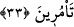

“fetvâ” denilmesi, müftînin, yâni doğru cevabı veren hâkimin hâdisenin cevabı
konusunda soru soranı takviye etmesi/güçlendirmesi sebebiyledir.”
“(Bilirsiniz) siz yanımda olmadan (size danışmadan) hiçbir işi kestirip atmam.”
İşlerden hiçbiri hakkında karar vermem ve uygulamam. Yâni siz hazır bulunmadan ve
sizin görüşlerinizin gereğini yapmadan hiçbir konuda kesin karar vermem. Siz de
yanımda hazır bulununuz. Yâni siz olmadan ve sizinle meşveret etmeden bir iş yapmam.
Bu söz, görüş ve tedbir konusunda kendisine muhâlefet etmemeleri için onların
kalblerini kazanmak için söylenmiştir.
Burada işâret vardır ki kişi, görüşünde başına buyruk olmamalı, karşısına çıkan bütün
işlerde istişâre etmelidir. Özellikle hükümdarların görüş ve basîret sâhiplerinden bir
heyeti olması ve onlara danışmadan bir iş hakkında karar vermemeleri gerekir.
Meşveret, doğru bir rehberdir, her işte meşveret gerektir
Meşveretsiz iş yapanın işinin sonu çoğunlukla yanlıştır
33. Onlar, şu cevabı verdiler: “Biz güçlü kuvvetli kimseleriz, zorlu savaş
erbabıyız; buyruk ise senindir; artık ne buyuracağını sen düşün.”
Sanki “Onlar, cevap olarak Belkıs’a ne dediler?” diye sorulmuş, bunun üzerine şöyle
denilmiştir: “Onlar, şu cevabı verdiler: Biz güçlü kuvvetli kimseleriz,” biz âletler,
insan sayısı ve techizât bakımından güçlüyüz “zorlu savaş erbabıyız;” savaşta bahadır
ve cesur kimseleriz.
Onların bu cevabı, Belkıs kendilerine savaşmayı emredecek olursa savaşa hazır
olduklarını îmâdır.
“Buyruk ise senindir;” sana bırakılmıştır. O hâlde “artık ne buyuracağını” bize ne
emredeceğini, Kâşifî’nin dediği gibi savaş ve barış hususunda ne diyeceğini “sen
düşün” bak ve gör.
Savaş istiyorsan, savaşalım
Düşmanların gönlüne derdler açalım
Sulh istersen, sana kul olalım
Senin hükmüne başımızı teslim edelim
Burada işâret vardır ki kendileriyle istişâre edilen kimselerin istişâre eden başkana
herhangi bir görüşe zorlamamaları, bilakis onu isâbetli gördüğü görüşte muhayyer
bırakmaları şarttır. Belki o işin durumunun nasıl daha iyi olacağını kendilerinden daha